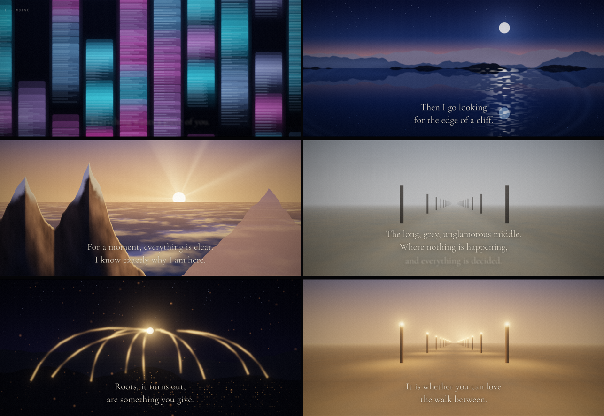
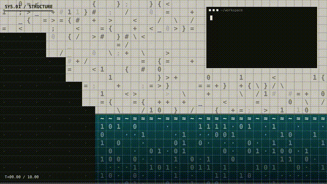
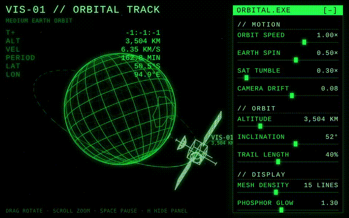

film · webgl · shader · generative · audio · narrative — Claude Sonnet 5.5

canvas · eco-brutalism · terminal · 10-second · procedural — Claude Sonnet 5.5

canvas · wireframe · retro · sci-fi · interactive — Claude Sonnet 5.5